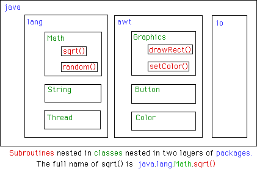

Sección 3.5: Cajas de herramientas, API's y Paquetes (Packages)
COMO LOS ORDENADORES Y LAS INTERFACES DE USUARIO deben ser sencillas de usar, se van haciendo mucho mas complejas para los programadores que tratan con ellas. Una sencilla interface como es la de consola, ha debido programarse utilizando bastantes subrutinas para escribir en la consola y para leer desde la misma lo que el usuario teclea. Una moderna interface gráfica de usuario con ventanas, botones, barras de scroll, menús, cajas de entrada de textos, etcétera, puede hacer al usuario las cosas muy sencillas. Pero obliga al programador a hacer frente a una enorme serie de posibilidades. Los programadores ven como se les incrementa la complejidad de sus programas en forma del gran numero de subrutinas que son necesarias para manejar la interface del usuario, tanto como para otros propósitos.
Alguien que quiera programar en un ordenador Macintosh y hacer un programa que tenga el aspecto y el comportamiento que un usuario experto podría esperar de el, debe tratar con la caja de herramientas de Macintosh, una colección de cerca de un millar de subrutinas distintas. Hay subrutinas para abrir y cerrar ventanas, para dibujar figuras geométricas y textos en las ventanas, para añadir botones a las ventanas y para responder al clic del ratón en la ventana. Hay otras rutinas para crear menús, y para reaccionar a la selección del menú por parte del usuario. Aparte de la interface del usuario, hay rutinas para abrir ficheros y leer los datos, para comunicarse en la red, para enviar datos a la impresora, para manejar las comunicaciones entre los programas y en general para hacer todas las cosas que normalmente puede hacer un ordenador. Windows 95 y Windows 3.1 proporcionan un juego de subrutinas semejantes para que los programadores las usen.
Es interesante conservar en mente la analogía con las cajas de herramientas, "toolbox". Cada proyecto de programación, envuelve una mezcla de herramientas , algunas nuevas, otras usadas anteriormente. El programador es el que define el juego de herramientas con el que va ha trabajar, empezando con el juego de herramientas básicas que viene incluido en el lenguaje: cosas como variables, instrucciones de asignación, instrucciones if, y bucles. A estas el programador le puede añadir cajas de herramientas llenas de subrutinas que ya están escritas para realizar ciertas tareas. Estas herramientas, si están bien diseñadas, pueden emplearse como verdaderas cajas negras. Pueden llamarse para ejecutar alguna tarea, sin preocuparse en absoluto sobre qué pasos en concreto deben realizar para ejecutar la tarea encomendada. La parte innovadora de la programación, es el tomar todas estas herramientas, y aplicarlas de una forma personal para resolver el proyecto o problema (procesador de textos, seguimiento de cuentas bancarias,navegadores, juegos,...) A esto se le llama programación de aplicaciones.
Una caja de herramientas de programación presenta una interface concreta al programador. Esta interface es la especificación de qué rutinas hay en la caja, qué parámetros se deben usar, y qué tareas realizan. Esta información constituye el API o Applications Programming Interface, asociada con la caja. El API de Macintosh es la especificación de todas las rutinas disponibles en la caja de herramientas de Macintosh. Las compañías que fabrican algún dispositivo electrónico, --como las tarjetas que ce emplean para conectar los ordenadores a las redes -- pueden publicar el API para esos dispositivos consistente en la lista de subrutinas que el programador puede llamar para comunicarse y controlar los dispositivos. Hay científicos que escriben juegos de rutinas para realizar algún calculo de tipo complejo -- como resolver ecuaciones diferenciales, por ejemplo -- y que proveen un API para que los usuarios puedan emplear estas rutinas sin necesidad de entender con detalle como se realizan los cálculos.
El lenguaje de programación Java se complementa con un amplio API estándar. Ya hemos visto parte de este API anteriormente, en la forma de las subrutinas Math como Math.sqrt(). el tipo de datos String y las rutinas asociadas presentadas en la Sección 2.8, y las rutinas System.out.print(). El API estándar de Java incluye rutinas para trabajar con interface gráfica de usuario, con comunicaciones de red, para leer y escribir ficheros y mas. Es sencillo pensar que esas rutinas vienen integradas en el lenguaje Java, pero técnicamente son subrutinas que han sido escritas, y que están disponibles para ser usadas en cualquier programa Java.
Java es independiente de la plataforma, Esto quiere decir que el mismo programa puede correr en plataformas distintas como Macintosh, Windows, UNIX y otros. El mismo API Java debe trabajar en todas esas plataformas. Un sistema Java en un ordenador concreto incluye la implementacion de todas las rutinas estándares del API. Los programas Java incluyen únicamente llamadas a estas rutinas. Cuando el interprete de Java ejecuta un programa y encuentra una llamada a una rutina estándar, se detiene y ejecuta la implementacion de esa rutina que es la apropiada para la plataforma concreta en la que esta corriendo.Esto es una gran idea.
De forma semejante a las subrutinas en Java, las rutinas del API estándar se agrupan en clases. Para facilitar una organización a gran escala, en Java las clases se agrupan en packages (paquetes) Con esto puede conseguir altos niveles de agrupación, dado que dentro de un paquete se puede guardar otro paquete. De hecho, la API estándar completa de Java está implementada en un enorme paquete llamado "java". El paquete java, a su vez esta formado por varios paquetes y cada uno de estos paquetes contienen numerosas clases.
Uno de los sub-paquetes de java por ejemplo, se llama "awt". Dado que awt esta contenido en java, el nombre completo realmente es java.awt Este paquete contienen las clases relacionadas con la interface gráfica del usuario, como la clase button, que representa los pulsadores en la pantalla en los que el usuario puede hacer clic para activarlos y la clase Graphics que proporciona rutinas para dibujar en la pantalla. Puesto que esta clases están contenidas en el paquete java.awt, el nombre completo será java.awt.Button y java.awt.Graphics. ( Espero que ya comprenda como se crean estos nombres, y como trabajan en Java).
El paquete java contiene bastantes otros subpaquetes, como java.net que permite manejar comunicaciones en la red, y java.applet que implementa las funciones básicas para los applets. El paquete mas elemental de todos se llama java.lang, e incluye las clases fundamentales como String y Math.
Puede que le ayude a entenderlo una representación gráfica de los niveles de anidamiento dentro del paquete java, los sub-paquetes, las clases dentro de los subpaquetes, y las rutinas dentro de las clases:

Según esto, si queremos emplear la clase java.awt.Button en un programa que este escribiendo, Una forma de hacerlo, es emplear el nombre completo de la clase. Por ejemplo, podemos decir:
java.awt.Button stopBttn;
para declarar una variable llamada stopBttnque es del tipo java.awt.Button.Naturalmente, escribir todo esto es bastante fastidioso. Si escribe:
import java.awt.Button;
al inicio del programa, antes de empezar a escribir ninguna clase, podrá abreviar el nombre completo de java.awt.Button a únicamente el nombre de la clase,Button, Así podrá escribir:
Button stopBttn;
para declarar la variable stopBttn. (El único efecto de la instrucción import es el permitir emplear únicamente el nombre de las clases en lugar del nombre completo "paquete.clase"; aunque todo esto no es realmente importante). Esto es una forma sencilla de importar todas las clases del paquete. Para importar todas las clases desde Java.awt, deberá decir:
import java.awt.*;
De hecho muchos programas java empiezan con esta línea y puede que también incluyan líneas como "import java.net.*" o "import java.io.*"
Dado que el paquete java.lang es fundamental, todas las clases de este paquete son importadas automáticamente al programa. Es como si todos los programas empezaran con la instrucción "import java.lang.*". Esto se hace para tener la posibilidad de utilizar el nombre de clase String en vez de java.lang.Sting y Math.sqrt() en lugar de java.lang.Math.sqrt(). Lo cual no significa , sin embargo, que no sea perfectamente legal el emplear la forma larga de los nombres.
Los programadores pueden crear nuevos paquetes. De hecho, cada clase es parte de un paquete. Si no se indica un paquete concreto, se sitúa en algo que se llama paquete por defecto (default package) que no tiene nombre. La clase Console que he estado usando en los ejemplos de estas notas, pertenece al paquete por defecto. En los proyectos en los que se define un número muy importante de clases, es interesante el organizar estas clases en uno o mas paquetes. Esto también tiene sentido para los programadores que crean nuevos paquetes tipo caja de herramientas, que proporcionan funcionalidades y API's para la venta y que cubren áreas no resueltas por el API estándar de Java. (y de hecho menudo tienen mas prestigio los programadores de herramientas, que los programadores de aplicaciones que utilizan esas herramientas.
 |
|
 |